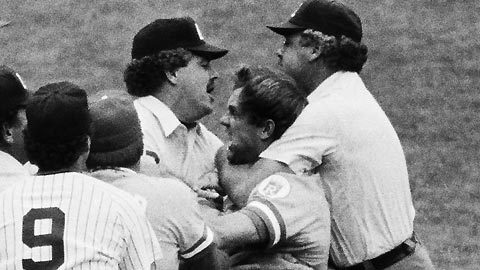

The infamous pine-tar incident. I was at the game, and could see Brett’s glowing-red face from the right field upper deck. None of us in the stands knew what the hell happened. One minute the Royals were having a great comeback; the next minute, Brett was apoplectic; then the game was somehow over. Didn’t find out what actually happened until I got home.